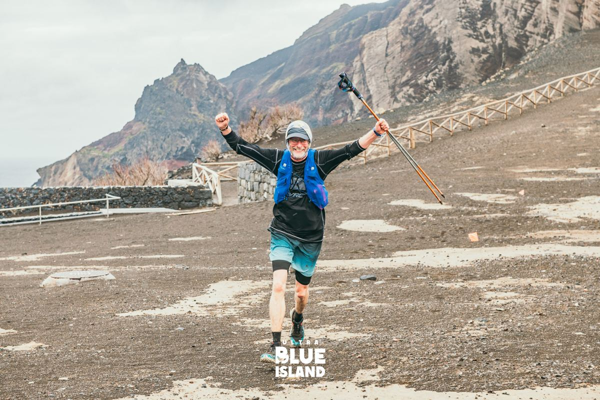
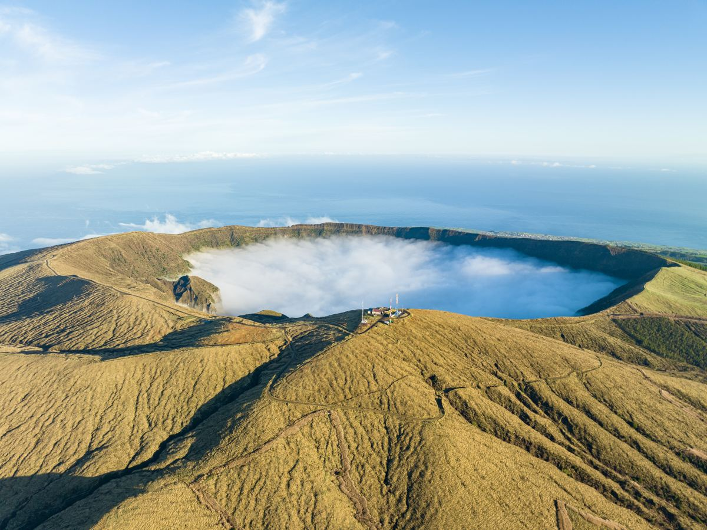
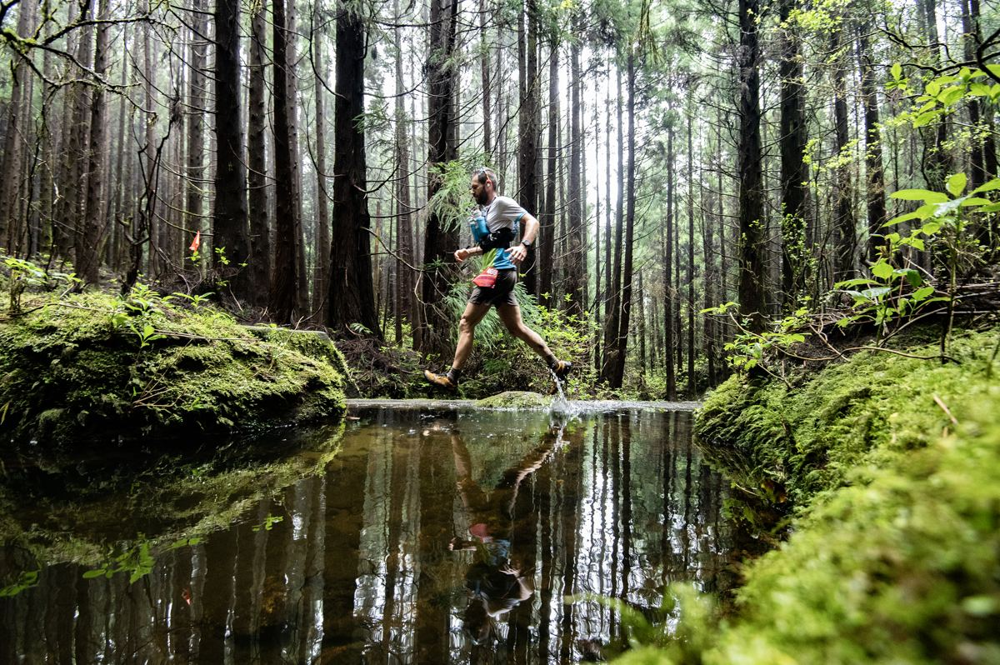
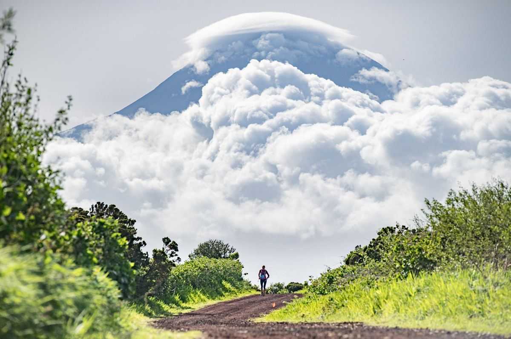
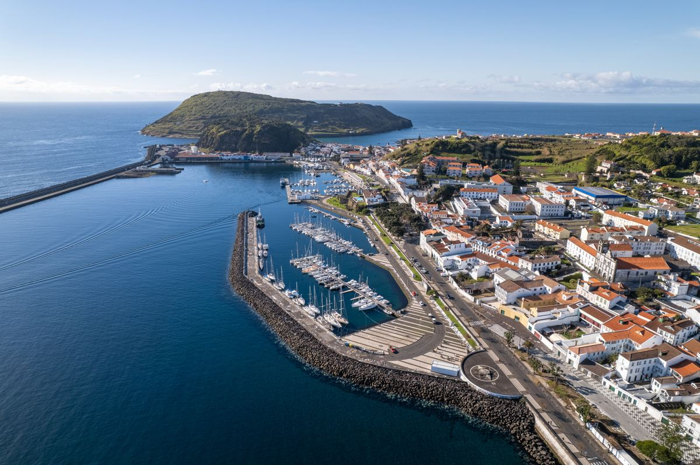

Em 30 segundos
O que torna esta prova diferente das outras distâncias da UBI.
Do extremo oeste, nos Capelinhos, à Horta, a passar pela Fajã da Praia do Norte, pelos Cedros e pelo Cabouco.
—
Com a população do Faial: Fajã da Praia do Norte, Império do Espírito Santo do Cascalho, Parque do Cabouco, Casa do Povo da Ribeirinha e Império do Canto do Chão Frio.
O sol põe-se às 20:45 e a meta fecha à meia-noite. A frontal é obrigatória.
O percurso
Passa o rato ou o dedo pelo perfil. Arrasta sobre ele, ou usa as pegas por baixo, para ver um troço em pormenor. Duplo clique repõe a prova inteira. A zona cinzenta é a parte que fazes de noite, com o tempo que escolhes em «O meu plano».
Por cima de cada ponto, a tua hora, com o tempo que escolhes em «O meu plano». Em cada troço, os km, a subida e o tempo que levas.
Arrasta a janela (ou as pegas ‹ ›) no perfil pequeno para escolher o troço que queres ver em pormenor. Também podes tocar noutro sítio do perfil pequeno, ou arrastar no perfil grande.
Toca num ponto do perfil ou do mapa para ver o que há lá.
GPX para o relógio
Um GPX feito para cada marca. Escolhe a marca e descarrega o percurso oficial (Trace de Trail) com os abastecimentos e as barreiras.
Descarregar o GPXGuardar no Strava
No Strava, guarda a rota com a estrela: passa sozinha para o relógio ligado à tua conta (Garmin, Coros, Suunto, Wahoo).
- No telemóvel, escolhe a marca e carrega em «Descarregar o GPX».
- Abre o ficheiro descarregado (no iPhone, na app Ficheiros; no Android, em Transferências) e usa «Partilhar» ou «Abrir com».
- Escolhe a app do teu relógio (Garmin Connect, Suunto, COROS…), guarda o percurso e sincroniza o relógio.
do telemóvel para abrir aqui.
O percurso em 3D no Strava
Carrega no ▷ do mapa para um voo em 3D por cima do percurso, ou no botão das camadas para o relevo em 3D e a fotografia de satélite. A distância e a subida deste cartão são as que o Strava calcula; as oficiais são as do Trace de Trail, no cimo da página.
Pontos e horários
Escolhe o tempo que contas fazer. A hora prevista em cada ponto reparte esse tempo pelo esforço de cada troço (km + D+/100), e avisa quando ficas perto de uma barreira.
| Ponto | Altitude | Distância | Próximo abastecimento | A minha hora | Barreira | Serviços | ||
|---|---|---|---|---|---|---|---|---|
Subidas e descidas
As maiores do percurso, com o nome do sítio; em «Ver todas» estão todas as que têm 100 m de desnível ou mais. A categoria segue a regra do Strava: comprimento × inclinação média. A hora muda com o tempo que escolhes em «O meu plano».
A prova
A Ultra Blue Island é a prova que dá o nome ao evento. Parte às 08:00 do Porto do Comprido, no Capelo, junto ao Vulcão dos Capelinhos, e atravessa o Faial até à Horta, onde termina na Avenida 25 de Abril, de frente para o mar.
Pelo caminho há cinco abastecimentos, onde a população do Faial recebe os corredores: a Fajã da Praia do Norte (km 8,2), o Império do Espírito Santo do Cascalho (km 19,3), o Parque do Cabouco (km 32,7), a Casa do Povo da Ribeirinha (km 45,0) e o Império do Canto do Chão Frio (km 54,3).
A corrida é em semiautonomia: entre dois abastecimentos, cada corredor leva a comida, a água e o material de que precisa.
A ilha pelo caminho
Os sítios do Faial por onde esta prova passa.
Entre 1957 e 1958, uma erupção no mar juntou terra nova à ponta oeste do Faial e cobriu de cinza o farol e as casas à volta. É a paisagem mais nova de Portugal, e é daqui que partem as provas mais longas.
Fotografia: Arquivo Azores Trail Run
Uma faixa de terra plana ao pé das falésias da costa norte, com praia de areia escura. A população da freguesia recebe aqui os corredores.
Fotografia: Nelson Silva · UBI 2025
A cratera no centro da ilha, com cerca de 2 km de largura e 400 m de fundo, é reserva natural. Muitas vezes está cheia de nuvens; ao lado fica o Cabeço Gordo, o ponto mais alto do Faial.
Fotografia: Arquivo Azores Trail Run
A floresta de criptomérias da Reserva Florestal de Recreio do Cabouco Velho, no interior da ilha: sombra, musgo e ribeiras a meio da prova.
Fotografia: Pedro Silva · UBI 2024
Do lado leste do Faial, do outro lado do canal, aparece o Pico, a montanha mais alta de Portugal (2 351 m), muitas vezes com o seu chapéu de nuvens.
Fotografia: Pedro Silva · UBI 2024
A cidade e a marina, porto de escala dos veleiros que atravessam o Atlântico, com as pinturas das tripulações no molhe. A meta é na Avenida 25 de Abril, de frente para o mar.
Fotografia: Arquivo Azores Trail RunO dia
Sábado, 1 de maio. Os autocarros para a partida são só para atletas e o acesso faz-se com o dorsal.
- qui/sexDorsais no Teatro Faialense, na Horta: quinta das 15:00 às 22:00 e sexta das 10:00 às 20:00. Briefing na sexta às 19:00.
- 07:00Autocarro da Horta para o Porto do Comprido, a partir da Escola António José d'Ávila.
- 08:00Partida, no Porto do Comprido (Capelo). O saco de muda de roupa entrega-se aqui e recolhe-se na meta com o dorsal.
- 10:30Barreira na Fajã da Praia do Norte (km 8,2).
- 13:15Barreira no Império do Espírito Santo do Cascalho (km 19,3).
- 16:45Barreira no Parque do Cabouco (km 32,7).
- 19:45Barreira na Casa do Povo da Ribeirinha (km 45,0).
- 22:15Barreira no Império do Canto do Chão Frio (km 54,3).
- 00:00Fecho da meta, na Av. 25 de Abril, na Horta.
- domEntrega de prémios às 10:30, no Mercado Municipal da Horta.
Material obrigatório
Não há copos descartáveis nos abastecimentos: o copo pessoal é obrigatório.
- Dorsal
- Mochila ou equipamento semelhante
- Recipiente de água, 0,5 l no mínimo
- Manta térmica (100 × 200 cm no mínimo)
- Corta-vento ou casaco impermeável
- Telemóvel ligado, com bateria e saldo
- Alimentação de reserva
- Apito
- Copo ou recipiente pessoal
- Frontal com pilhas de substituição
- Documento de identificação com fotografia
Faltar a manta, o corta-vento, a frontal, o telemóvel ou o documento dá desclassificação; os outros itens dão 1 hora de penalização. Em emergência, se não conseguires falar com a organização, liga 112.
Antes e durante a prova
O essencial da Race Week. Em caso de dúvida, fala connosco no secretariado.
Levantar o dorsal
- Documento de identificação com fotografia.
- Declaração de verificação de material e termo de responsabilidade, assinados. Menores de 18 anos: declaração para menores. Modelos dos documentos.
- Se outra pessoa levantar por ti: cópia do teu documento e a tua autorização assinada.
O dorsal
- No peito ou na barriga, sempre à vista, por cima da roupa. Nunca na perna nem preso à mochila.
- Não podes tapar o nome nem os logótipos dos parceiros.
- É o teu passe para autocarros, abastecimentos, postos médicos, casas de banho e sacos.
- Se desistires, o dorsal é cortado no posto onde paras.
Semi-autonomia
- Entre abastecimentos, vais por tua conta: comida, roupa e material de segurança.
- Sai de cada abastecimento com comida e líquidos até ao seguinte.
- Os abastecimentos têm água e bebidas para encher garrafas, e comida para comer no local. Não há copos: leva o teu.
- É proibido receber ajuda ou ir acompanhado por quem não está inscrito.
Postos de controlo e sacos
- Os postos são de passagem obrigatória e o registo faz-se à chegada. Falhar um posto pode dar desclassificação.
- Os locais podem mudar até ao dia da prova, por causa do tempo ou do terreno.
- Saco de muda de roupa: recebes a etiqueta com o dorsal, entregas o saco na partida e recolhe-lo na meta. Não ponhas lá objetos de valor.
A montanha pede autonomia: noite, vento, frio, nevoeiro e chuva sem ajuda de fora, e gerir cansaço e pequenas lesões sozinho. Aconselhamos um exame médico desportivo antes da prova.
A comunidade no Strava
O clube Azores Trail Run no Strava: o resumo da semana e as atividades mais recentes dos membros.